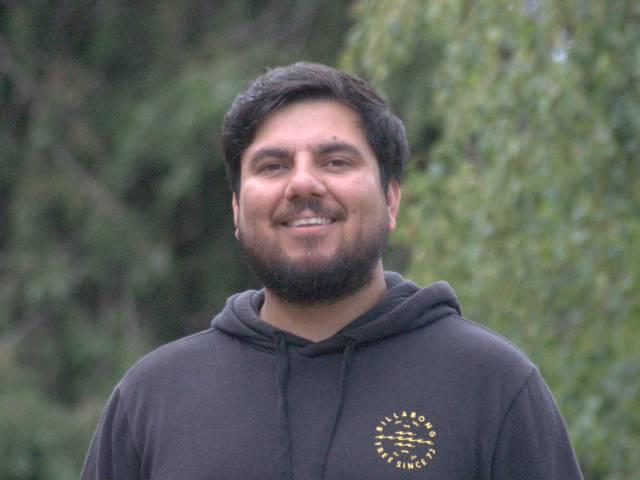

Biofeedback Control
Using fluorescence and optical measurements as real-time indicators of culture performance and stress.

I work at the intersection of artificial intelligence, optical sensing, electronics, and photobiology. My research focuses on building intelligent control systems that use light-derived signals to optimise biological performance in real time.
Using fluorescence and optical measurements as real-time indicators of culture performance and stress.
Designing custom electronics and optical systems for continuous biological monitoring.
Applying data-driven models for growth forecasting, optimisation, and anomaly detection.
Supporting scalable microalgae cultivation through intelligent sensing and environmental control.
Alongside my research and engineering work, I provide technical support, systems development, custom electronics, and applied R&D services for education, research, and industry clients.
NSW Department of Education, University of Technology Sydney, PSI (Photon Systems Instruments), Algenie.
Optical sensing, embedded systems, data acquisition, IoT, machine learning workflows, and research instrumentation.
Interested in collaborating, discussing research, or learning more about my work? Get in touch.